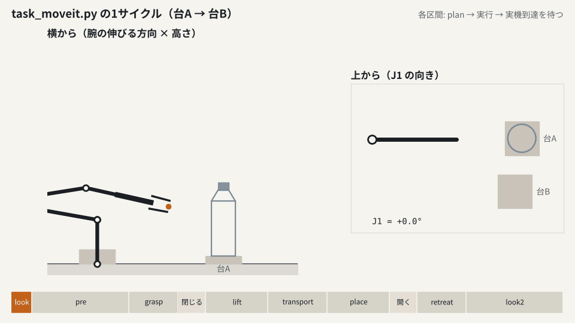
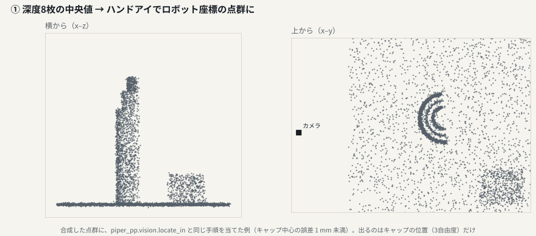
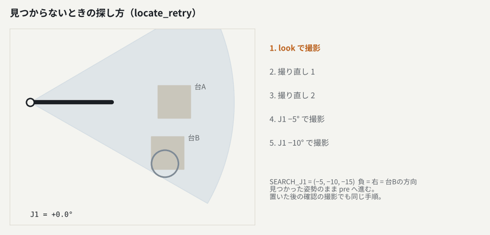
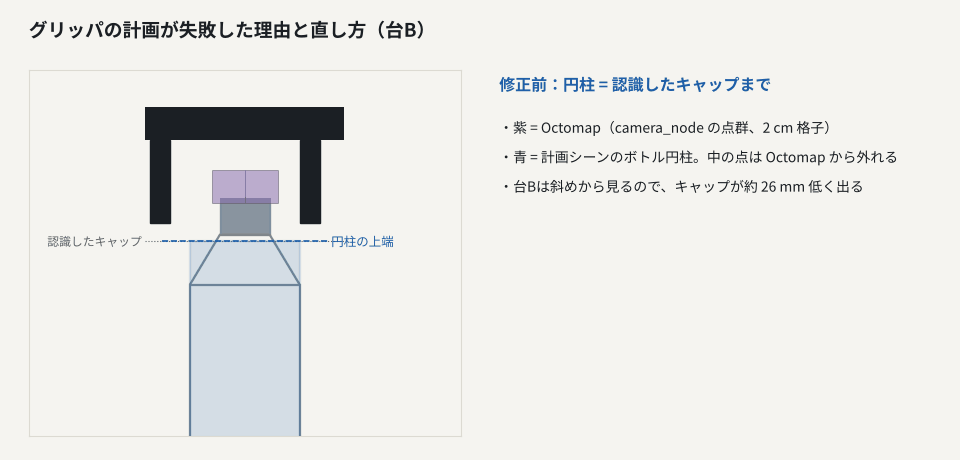
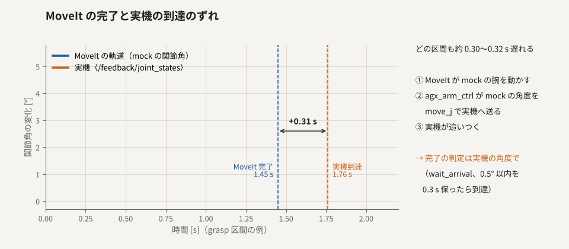

ペットボトルを台A↔台Bで往復させる B 方式が、どのプログラムのどの関数で、何を順に行っているか。2026-10-30 の実機試験で直したところも含めて、図と動きで追う。
実機は agx_arm_ctrl（AgileX 公式ドライバ）だけが CAN で動かす。MoveIt は ros2_control の mock（仮想の腕）を動かし、ドライバがその関節角を move_j で実機へ送る。実機の角度は /feedback/joint_states に戻ってくるので、計画の始点と到達の判定はそちらを使う。
rqt_image_view /bottle_vision/image で YOLO の枠を見る（Jetson の RViz に Image 表示を足すと 3D 表示が真っ暗になるため）。Task.run() がサイクルを回す。目標は手先の位置で決め、自前の IK（kinematics.solve、A と同じ）で関節角にしてから MoveIt に渡す（--mode joint）。区間ごとに「計画 → 実行 → 実機の到達を待つ」を繰り返す。

setup_scene() 床・台A・台B の箱を計画シーンへ。台の高さは台ごと（station_surface）move("look") 両方の台が写る姿勢へlocate_retry() → camera_node の ~/locate。どちらの台にあるかとキャップ位置grasp = cap − grip_down + zoff_pick、外向きに adv_pick。pre は 6 cm 手前、lift は 10 cm 上。置き先も同様（4 節）prepare_octomap() ボトルを円柱で置き、点群から外す（5 節）gripper(OPEN) → move("pre") → move("grasp")gripper(0)。開き幅が落ち着くまで待つ。5 mm 未満なら「つかめず」attach_bottle()（円柱を tcp_link に付ける）→ lift → transport → placegripper(OPEN) → release_bottle() → retreat → look2locate_retry() で置き先を撮り、置き位置のずれを記録。15 mm 以内で「成功」、見つからなければ止めるdef move(self, name, q_deg, start=None): traj, pms, tries, note = self.plan(q_deg, start=start) # 計画。|J6|≤90°, |J4|≤100° を外れたら計画し直す（3回まで） self.show(traj, start) # RViz の Planned Path に表示 if self.dry: return target # --dry は計画だけ（前の区間の終点から計画） self.wait(f"{name} を実行します。") # --auto でなければ Enter 待ち self.arm.execute(traj) # MoveIt が mock の腕を動かす ok, _ = self.fb.wait_arrival(target, 0.5, 30.0, self.log) # 実機の角度が 0.5° 以内を 0.3 s 保つまで
on_locate() は、呼ばれた時刻より後に撮った深度を 3 枚そろえる（frames_after）。腕が止まってからの画像だけを使うためで、撮影中に腕が 0.1° 以上動いたら警告を出す。
vision.depth_points() 3 枚の中央値 → カラーカメラ座標の点T_base_cam(q) = 実機の関節角の順運動学 × ハンドアイ（T_flange_cam.npy）vision_yolo.detect() 画像を 180° 回して yolo11n（class 39 bottle、conf 0.30）。枠は元の向きへ戻すfilter_by_boxes() 枠（15% 広げる）に写る点だけ残す。V0 はここを飛ばすvision.locate_in() 台ごとに半径 60 mm 内の点から、上端の高さと円の中心
locate_in）。
時間：認識全体で 0.6〜0.7 s。そのうち YOLO は 49 ms（初回だけ GPU の準備で 1.06 s）。
目標は認識したキャップ位置から計算し、台ごとの補正を足す。補正は data/stations.json にあり、毎サイクル読み直す。A（09_pick_place.py）と B で同じ式を使う。
# つかむ（台 src） grasp = cap − [0, 0, grip_down − zoff[src].pick] grasp.xy += adv_pick[src] × 外向き（J1 軸から） # 置く（台 dst） place.xy = 台 dst の位置 + adv[dst] × 外向き place.z = cap.z − surface[src] + surface[dst] + zoff[dst].place − grip_down + place_gap
data/stations_run2.json に保存。現場で「台Bでつかむ位置を 10 mm 上へ」のように指示し、その都度書き換えた。camera_node が動いていると、MoveIt の Octomap は常に有効になる。何もしないと、つかむボトル自体が障害物になり、grasp が計画できない。そこで --octomap を付けなくても、Octomap があれば同じ扱いにする。
prepare_octomap() ボトルの円柱（キャップ上端＋40 mm まで）を置き、allow_collisions(True)、Octomap を撮り直すattach_bottle() 衝突を見る設定に戻し、円柱を tcp_link に付ける（指との接触は touch_links で許す）release_bottle() 円柱は外して残す（消すと点に戻り、引くときに指と当たる判定になる）
点群は台の天面を含めないよう、置き面＋30 mm より下を落としている（台は計画シーンの箱で表す）。12 mm では深度の誤差で台Bの天面が紫の板として残った。

実機の追従は mock → agx_arm_ctrl → move_j の経路で約 0.3 s 遅れる。wait_arrival() が実機の角度で到達を判定し、その間の関節角を約 20 Hz で traj_B.csv に残す（A と同じ列）。
| 項目 | 結果 | |
|---|---|---|
| tcp_link と A の TCP の一致 | 0.09 mm / 0.000° | 合格 |
| MoveIt 完了 → 実機到達 | +0.30〜0.32 s | 一定 |
| 計画時間（1区間 / 1サイクル） | 20〜75 ms / 230〜300 ms | すべて 1 回で成功 |
| 認識（全体 / YOLO） | 0.6〜0.7 s / 49 ms | 初回のみ 1.06 s |
| 往復 10 サイクル（初期設定 run1） | 10/10 成功 | 置き位置のずれ 平均 6.3 mm、最大 10.1 mm |
| 1サイクルの時間（--auto） | 約 26 s | 腕が動く時間は約 16 s |
| 調整後（run2） | 補正を入れて継続 | 途中の停止を直した：グリッパの計画失敗、見つからず、ずれ大 |
| 止まり方 | 原因 | 直し方 |
|---|---|---|
| grasp が計画できない | つかむボトルが Octomap の障害物 | Octomap があれば円柱で外す |
| グリッパの計画に失敗（閉じる） | キャップが低く出て、円柱の上にボトル上部の点が残る | CAP_MARGIN = 0.04 |
| 見つからない / 置き先に無い | YOLO の取りこぼし、視野の端 | locate_retry()：撮り直し 2 回 → J1 を右へ回す |
| ずれ大（15 mm 超）で停止 | 置き位置の評価基準で止めていた | 記録して継続。置き先に無いときだけ止める |
| RViz の 3D が真っ暗 | Jetson で Image 表示を足した | 画像は rqt_image_view で見る |
| ファイル | 役割 |
|---|---|
| ros2/launch_b.sh | agx_arm_ctrl＋MoveIt＋RViz を起動（起動時に腕は全関節 0 へ） |
| ros2/camera_node.py | 点群の配信、locate サービス、TF、枠付き画像 |
| ros2/task_moveit.py | 往復タスク。--dry / --auto / --mode / --obstacle / --octomap |
| ros2/goto.py | 保存姿勢へ移動。deg J1…J6 で関節角を直接、now で今の角度 |
| ros2/save_pose.py | 今の姿勢を poses.json に保存（同名は _prev に退避） |
| ros2/p1_check.py | TCP の一致と遅れの測定 |
| ros2/rosutil.py | 実機の関節角の受信（Feedback）と到達待ち |
| piper_pp/vision.py, vision_yolo.py | 点群、YOLO、キャップ位置（A と共通） |
| piper_pp/runlog.py, seglog.py | 記録（cycles / segments / traj）と台ごとの補正 |
| scripts/11_make_report.py | A と B の記録から比較レポート |
# 端末3（ROS2・venv は source ros2/env.sh）
python ros2/task_moveit.py --dry --ros-args -r joint_states:=/feedback/joint_states
python ros2/task_moveit.py 10 --auto --ros-args -r joint_states:=/feedback/joint_states